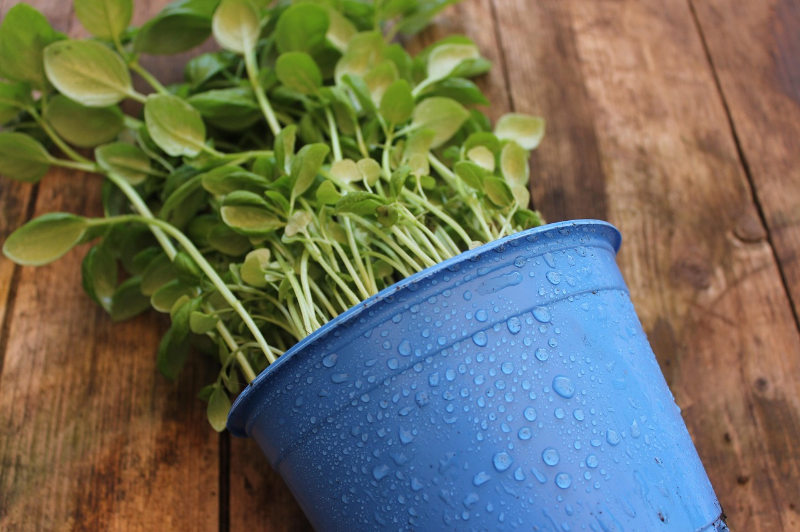
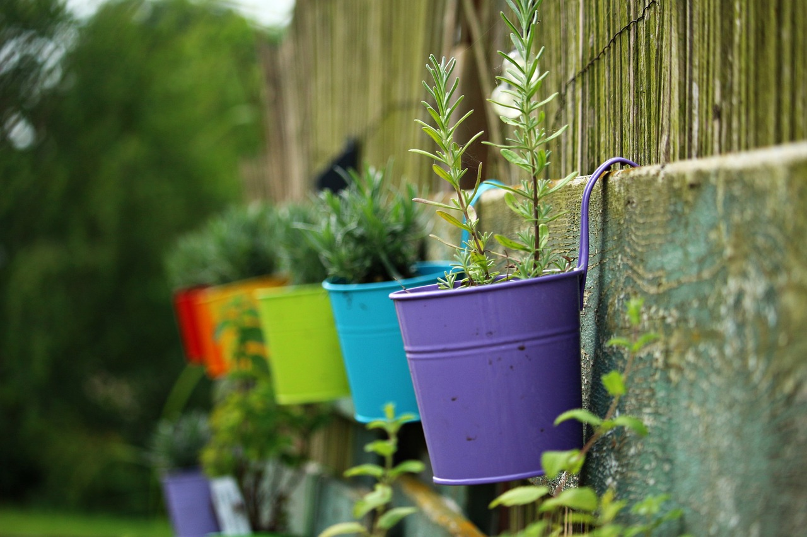
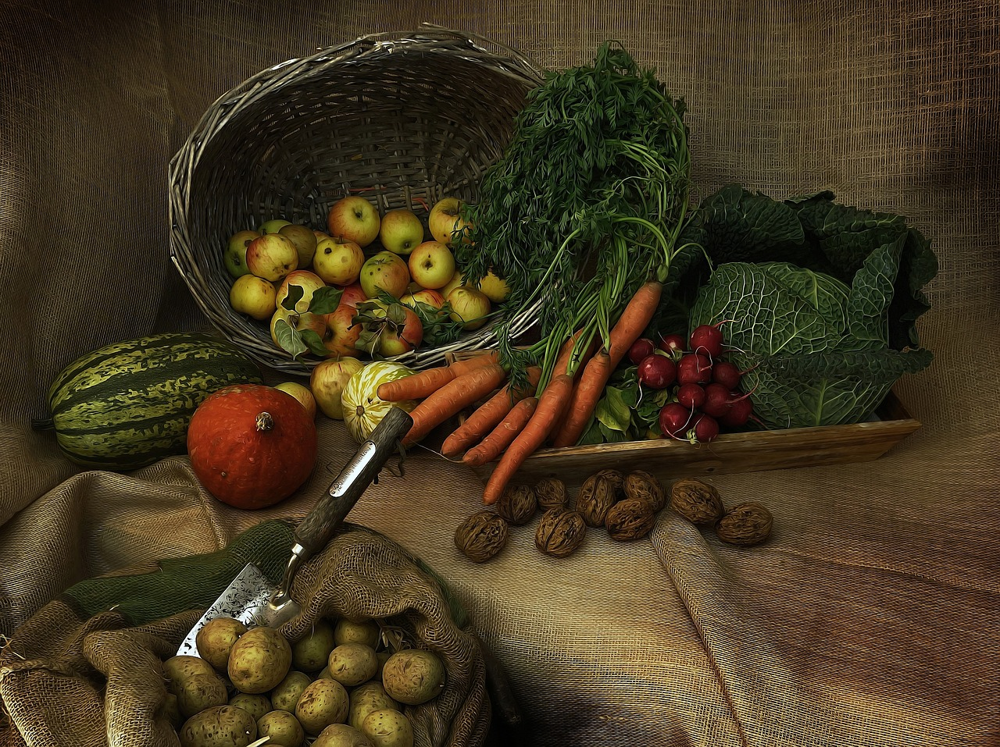

Jak stworzyć ekologiczną uprawę w domu?
Uprawa roślin w domu to świetny sposób na cieszenie się świeżymi warzywami, ziołami i kwiatami przez cały rok, a wszystko to w ekologiczny sposób. Poniżej znajdziesz krok po kroku, jak stworzyć własną ekologiczną uprawę w pomieszczeniu.
Krok 1: Wybór odpowiedniego miejsca
Wybierz miejsce, które będzie dobrze nasłonecznione. Większość roślin potrzebuje od 4 do 6 godzin dziennie światła słonecznego. Jeśli nie masz dostępu do naturalnego światła, rozważ zainwestowanie w lampy LED do uprawy roślin.
Krok 2: Przygotowanie odpowiedniej gleby
Używaj ziemi organicznej, która jest bogata w składniki odżywcze, ale nie zawiera sztucznych nawozów ani pestycydów. Możesz stworzyć własną mieszankę gleby, dodając kompost, torf i piasek w proporcjach dostosowanych do rodzaju roślin, które zamierzasz uprawiać.

Krok 3: Wybór odpowiednich pojemników
Do uprawy roślin w pomieszczeniu najlepiej sprawdzają się doniczki z otworami do odprowadzania nadmiaru wody. Możesz używać doniczek ceramicznych, drewnianych lub plastikowych – pamiętaj, aby były one dostosowane do wielkości roślin.
Krok 4: Wybór roślin do uprawy w domu
Nie wszystkie rośliny nadają się do uprawy w pomieszczeniu. Wybierz te, które dobrze rosną w warunkach niskiego światła i wilgotności. Oto kilka przykładów roślin, które świetnie nadają się do uprawy w domu:
- Sałata: Rośnie szybko i wymaga niewielkiej ilości światła.
- Rukola: Lubi chłodniejsze warunki i nie potrzebuje dużej ilości światła.
- Szpinak: Rośnie w cieniu i jest bardzo łatwy do uprawy w pomieszczeniach.
- Zioła: Bazylia, mięta, oregano – to doskonałe rośliny do uprawy w kuchni.
- Pomidory koktajlowe: Można je uprawiać w małych doniczkach, o ile zapewnimy im odpowiednie światło.
Krok 5: Nawożenie i pielęgnacja
Do nawożenia stosuj naturalne nawozy, takie jak kompost, nawóz roślinny na bazie gliny lub nawóz organiczny. Regularnie podlewaj rośliny, ale pamiętaj, aby nie przesuszyć ziemi. Najlepiej podlewać rano, aby rośliny miały czas na wyschnięcie do wieczora.
Krok 6: Ochrona przed szkodnikami
W uprawie domowej rośliny mogą być narażone na ataki szkodników, takich jak przędziorki czy mszyce. Zamiast chemii, używaj naturalnych metod, takich jak:
- Spryskiwanie roślin wodą z dodatkiem mydła potasowego.
- Używanie olejków eterycznych, np. z drzewa herbacianego lub lawendowego.
- Wprowadzenie naturalnych drapieżników, takich jak biedronki.
Krok 7: Zbiory
Regularne zbiory to klucz do sukcesu w domowej uprawie. Zbieraj liście i zioła, gdy są młode i świeże, a warzywa, takie jak pomidory, gdy są w pełni dojrzałe. Dzięki temu rośliny będą mogły się regenerować i dalej produkować nowe plony.
